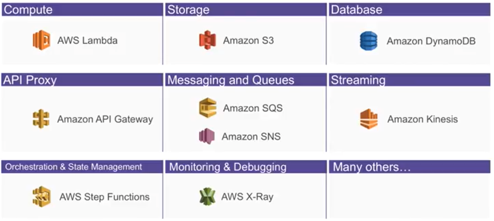
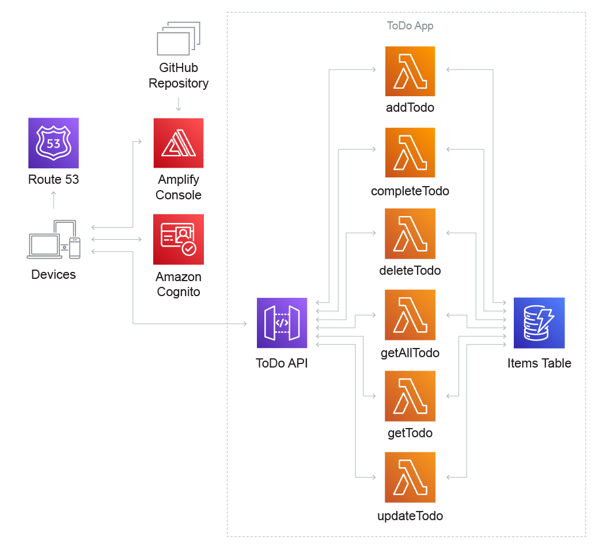

Serverless 101
Introducing What is Serverless with AWS Services

Since our company’s services are built on AWS and heavily rely on various serverless computing services,
I had no prior experience in this area.
This series serves as a compilation of notes for me,
and its content may be subject to constant revisions in the future.
Although it’s called “serverless,” servers still exist in reality; they are simply deployed and maintained by the cloud platform.
For users, all they need to do is write the code without having to worry about server tuning.
Backend engineers often have to manage servers on the side, and they know how painful it is.
However, with the Serverless architecture, infrastructure management can be delegated to cloud service providers simply by writing configuration files (and pulling out the magical card from the boss).

Common cloud service providers all have their own Serverless services
- AWS：Lambda
- Microsoft Azure：Functions
- Google：Cloud Functions
The Serverless-related services provided by AWS can be broadly categorized as follows:

Serverless ≠ Lambda Function
That is a common misconception.
In addition to Lambda Functions, Serverless also encompasses the composition of event sources and other resources.
This includes APIs, databases, and event triggers that work together to execute tasks.
And AWS provides AWS Serverless Application Model(AWS SAM）
It is an open source architecture for building serverless applications
Pros
Basically, the infrastructure is outsourced to a cloud service provider to help you solve
- High availability: Increase program traffic flexibility and stability through automatic scaling and load balancing
- Reduced server idle performance: charge according to usage, use as much as you want instead of keeping the host on all the time
- Reduced server setup and maintenance labor costs
- Security: No need to worry about the overall security of the server
Cons
It primarily stems from the issues arising from not having servers running continuously.
- Debugging can be a bit challenging and requires the use of log processing mechanisms like CloudWatch.
- Can’t handle Schedule job => Lambda not always running
- There is a startup time involved when executing Lambdas.
- Request cannot be guaranteed to run on the same Lambda => Lambdas are stateless, state synchronization must be handled through other services.
Architecture
By using Lambda to write different functions, it replaces the traditional monolithic codebase that runs on virtual servers.
This can be seen as an implementation of Function as a Service (FaaS) paradigm.
The general flow is as follows:
Event Source -> Lambda Function -> Service
- Event Source: An event or trigger occurs, such as an API request, database update, or message in a queue. This event acts as the source of the operation.
- Lambda Function: The event is passed to a Lambda function, which is a small piece of code responsible for processing the event and performing the necessary actions or computations. The Lambda function is executed in a serverless environment.
- Service: The Lambda function interacts with other services or resources, such as databases, APIs, or external systems, to complete the required operations. These services provide the necessary functionality and data processing capabilities.
For a simple to-do list application, the system architecture diagram using Serverless would look like this
The key focus would be on the dashed section labeled ToDo App on the right side of the diagram.
This section aligns with the flow of Event Source -> Lambda Function -> Service mentioned above.
